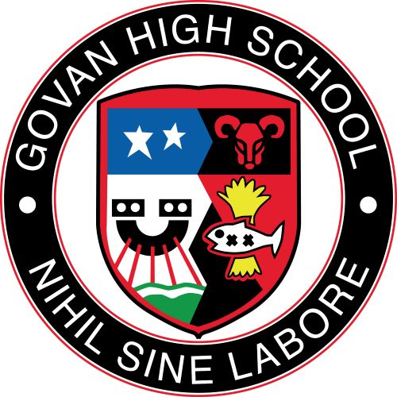

Skip to content

GOVAN HIGH SCHOOL
Geography Learning Hub
Together, achieving our full potential.
BGE & Senior Phase
Department review version
Home
Our courses
Go deeper
Geographical skills
Assignments
iPad learning
Resources
Our community
EAL & language support